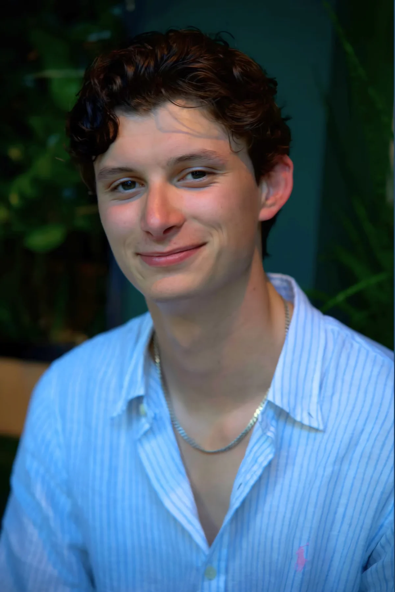
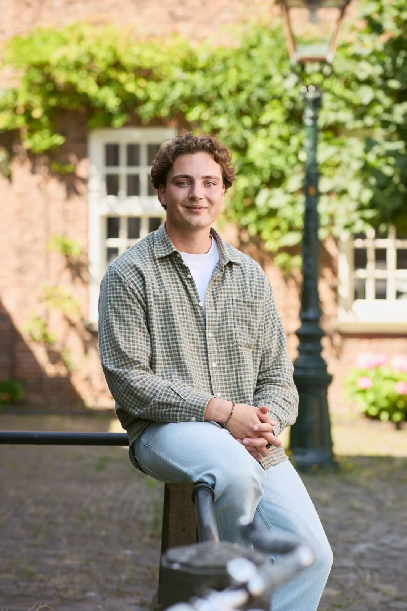

01Onze visie
Onze visie
Kleiner wonen, ruimer leven.
Een kleiner huis kan minder onderhoud en meer financiële ruimte bieden. We bekijken wonen, planning en beleggen in samenhang.
Maak kennis met de mensen achter VermogenKompas en lees waar we voor staan.
Kleiner wonen, ruimer leven.
Een kleiner huis kan minder onderhoud en meer financiële ruimte bieden. We bekijken wonen, planning en beleggen in samenhang.
Wij wijzen de weg naar uw volgende stap: in wonen én in vermogen.
We helpen 50-plussers met hun woonkeuzes en geplande uitgaven. Bij overwaarde verkennen we samen de mogelijkheden, zoals sparen of beleggen.
We bespreken duurzame keuzes voor uw woning en vermogen, in balans met uw doelen, rendement en risico.
Iedere adviseur heeft een eigen focus. Samen kijken we naar wonen, vermogen, risico en de toekomst.

Ik help u met woonkeuzes, maandlasten en hypotheekvragen rond uw pensioen.
Voor mij begint goed financieel advies bij de vraag hoe u prettig en verantwoord wilt blijven wonen. Vooral wanneer uw pensioen nadert of al is ingegaan, kunnen uw inkomen, woonwensen en financiële mogelijkheden veranderen. Ik help u graag om daar op tijd duidelijkheid over te krijgen.
Tijdens een gesprek kijk ik naar uw volledige situatie. We bespreken uw inkomen, spaargeld, hypotheek, maandlasten en plannen voor de toekomst. Ook persoonlijke veranderingen, zoals het overlijden van een partner, kunnen grote gevolgen hebben. Daarom vind ik het belangrijk om verder te kijken dan alleen de cijfers van vandaag.
Ik vergelijk de verschillende mogelijkheden en leg de kosten, voordelen en risico’s duidelijk uit. Daarbij bespreek ik ook eerlijk wanneer extra lenen niet verstandig is of wanneer een andere oplossing beter bij uw situatie past.
Duurzaamheid betekent voor mij dat een advies ook op langere termijn verantwoord blijft. Dat kan gaan over energiezuinig wonen, betaalbare maandlasten of een woning die beter aansluit op uw toekomst. Mijn doel is dat u na ons gesprek begrijpt welke keuzes u heeft en met vertrouwen een volgende stap kunt zetten.

Ik help u met hypotheken, overwaarde en financiële planning. Mijn advies staat los van mijn vastgoedbedrijf.
Goed advies is advies waar u over tien jaar nog achter staat. Dat is mijn uitgangspunt.
Ik ben mede-eigenaar van Stay Vastgoed en werk dagelijks met woningeigenaren. Ik weet wat er speelt rond woningwaarde, overwaarde en verduurzaming. Die ervaring zet ik in voor mensen van 50 jaar en ouder die hun financiële toekomst goed willen regelen.
Ik vertel u hoe het ervoor staat, ook wat er mis kan gaan. Ik adviseer alleen wat realistisch is, zonder onnodige risico’s en zonder verkooppraatje. Mijn advies staat los van mijn vastgoedbedrijf.
Kennismaken kan altijd vrijblijvend.
Ik help u afwegen welke keuzes rond beleggen en verduurzamen bij uw wensen passen.
Een goed financieel advies begint bij het begrijpen van de persoon achter de cijfers. Iedere klant heeft andere wensen, doelen en toekomstplannen. Daarom vind ik het belangrijk om niet alleen naar het financiële resultaat te kijken, maar naar het volledige plaatje.
Mijn manier van adviseren is duidelijk, zorgvuldig en persoonlijk. Ik vind het belangrijk dat klanten begrijpen welke keuzes zij maken en waarom deze bij hun situatie passen. Daarbij kijk ik naar de balans tussen zekerheid, rendement, risico en duurzaamheid.
Of het nu gaat om beleggen of het verduurzamen van een woning, ik denk graag met u mee over financiële keuzes die passen bij uw situatie en toekomst.
Mijn doel is dat u na een gesprek weet waar u aan toe bent en met vertrouwen verder kunt.
Ik zet samen met u de mogelijkheden en risico’s rond wonen en vermogen op een rij.
Even voorstellen: ik ben Joppe Maas. Ik ben een sociale jongen die nu net in het vak zit. Ik heb hbo Business Studies gedaan en een minor in financieel advies.
Ik hou ervan om in contact te zijn met mensen en door middel van een ontspannen gesprek samen te kijken naar (duurzame) mogelijkheden. Uw eerste huis kopen of uw vermogen beleggen zijn geen makkelijke dingen. Ik vind het daarom belangrijk dat u zich op uw gemak voelt tijdens een gesprek.
Samen brengen we uw financiële situatie in kaart, luister ik naar uw wensen en leg ik u de mogelijkheden en risico’s uit.
Nieuwsgierig geworden? Plan een vrijblijvend kennismakingsgesprek in!
Vertel kort wat u bezighoudt. Dan kan het gesprek bij de juiste focus beginnen.
Plan een kennismaking